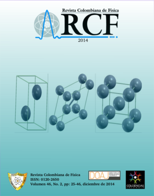

Publicación oficial de la Sociedad Colombiana de Física, entidad que vela por el desarrollo de la Física y de la Comunidad de Físicos en Colombia.
Perfil de la Revista en Google Scholar
| SCF | Colciencias | Búsquedas | Enlaces |
Bienvenidos a la Revista Colombiana de Física. Les presentamos el segundo número del volumen 46 de 2014. Los números desde el año 2010 se pueden ver en "Archivos" . Volúmenes anteriores (1965-2009) se encuentran a través del enlace "Publicaciones anteriores" (Google drive mirror ) .
|  |
Vol 46, No 2 (2014): Volumen 46, No. 2, de 2014
Tabla de contenidos
EpistemologÃa, Historia y Enseñanza de la FÃsica
| Uso de foros virtuales para la enseñanza de la asignatura de Fluidos y Termodinámica. Una experiencia en la Pontifica Universidad Javeriana | |
| G. A. MejÃa Cortés | 25 |
FÃsica Computacional
| Análisis computacional de la convergencia del método de Newton-Raphson para el estudio de circuitos con elementos memristivos | |
| J. A. Salamanca, J. J. Leal, D. J. Rodriguez | 29 |
Materia Condensada
| Estabilidad relativa del compuesto carburo de titanio TiC: un estudio mediante DFT | |
| R. E. Báez, J. H. DÃaz F., M. J. Espitia R. | 38 |
| Un estudio DFT de las propiedades estructurales y electrónicas del Ti en las fases α, β, Ï, fcc y Zno | |
| D. A. Pacheco, J. H. Diaz, L. C. Jimenez | 42 |

Este trabajo está licenciado bajo la licencia Creative Commons Attribution 3.0 .
ISSN: 0120-2650
Siguenos en:


Indexada en: